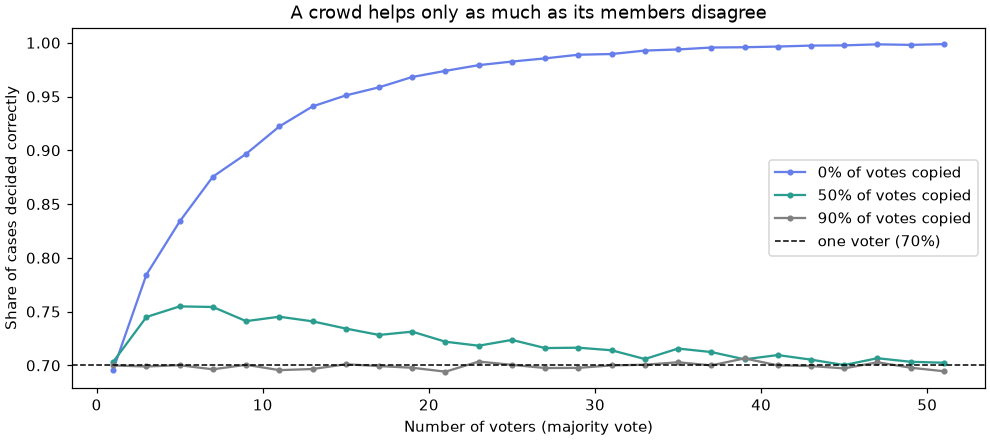

🤝 Lesson 5.4: Voting and Stacking
Combine different kinds of models into one team, learn when the team really beats its best player, and decide like a professional whether the extra complexity is worth shipping.
🎯 Learning Objectives
By the end of this lesson, you will be able to:
- Explain why a group of models beats its members only when their errors differ, and measure that diversity
- Build hard and soft
VotingClassifierensembles from complete preprocessing pipelines - Build a stack by hand from out-of-fold predictions, then with
StackingClassifier, and explain why in-sample predictions leak - Judge whether an ensemble's gain is real (bootstrap) and worth its cost in training time, latency and explainability
In This Lesson
🧭 The Wisdom of a Diverse Crowd
You have already met two ensembles. A random forest (Lesson 5.2) averages many trees of the same kind trained on different samples. Gradient boosting (Lesson 5.3) adds trees one after another. This lesson combines models of different kinds: a logistic regression, a forest and a booster, each seeing the customers in its own way.
💡 Mental Model: The Gear-Testing Panel
Pinecrest asks a panel of three testers whether a new jacket is waterproof enough to stock. If each tester is right 70% of the time and they judge independently, a majority vote is right more often than any one of them: their mistakes rarely line up. But if all three read the same online review and repeat it, the panel is no better than the review. A crowd is only wise when its members make different mistakes.
Voting is the panel counting hands. Stacking is a manager who has watched the panel for a season and learned whose opinion to trust, and how much.
Simulate it. Each "voter" is right with probability 0.7. With probability shared, a voter copies a common opinion (itself right 70% of the time) instead of judging independently, which makes the voters' errors correlated.
import numpy as np
rng = np.random.default_rng(42)
def crowd_accuracy(n_voters, shared, p_correct=0.7, n_cases=20_000):
common = rng.random(n_cases) < p_correct # the shared opinion
own = rng.random((n_cases, n_voters)) < p_correct # each voter's own judgment
copies = rng.random((n_cases, n_voters)) < shared # who copies the shared opinion
correct = np.where(copies, common[:, None], own)
return (correct.sum(axis=1) > n_voters / 2).mean() # majority vote right?
for shared in [0.0, 0.5, 0.9]:
accs = [crowd_accuracy(n, shared) for n in (1, 5, 25)]
print(f"shared {shared:.1f}: 1 voter {accs[0]:.3f} 5 voters {accs[1]:.3f} 25 voters {accs[2]:.3f}")Output
shared 0.0: 1 voter 0.695 5 voters 0.837 25 voters 0.982
shared 0.5: 1 voter 0.704 5 voters 0.754 25 voters 0.721
shared 0.9: 1 voter 0.703 5 voters 0.699 25 voters 0.702Independent voters improve fast: five 70%-voters reach about 84% together, which matches the binomial formula for a majority of five:
P(majority right) = Σk ≥ 3 C(5, k) · 0.7k · 0.35−k ≈ 0.837
With half the voters copying, the gain shrinks; at 90% copying, adding voters barely helps. Real models trained on the same data are never independent: they see the same customers and the same strong signals. The question for any ensemble is how different their errors still are.
import matplotlib.pyplot as plt
sizes = range(1, 52, 2)
fig, ax = plt.subplots(figsize=(9, 4), layout="constrained")
for shared, color in [(0.0, "#667eea"), (0.5, "#2a9d8f"), (0.9, "gray")]:
ax.plot(sizes, [crowd_accuracy(n, shared) for n in sizes], marker="o", markersize=3,
color=color, label=f"{shared:.0%} of votes copied")
ax.axhline(0.7, color="black", linestyle="--", linewidth=1, label="one voter (70%)")
ax.set_xlabel("Number of voters (majority vote)")
ax.set_ylabel("Share of cases decided correctly")
ax.set_title("A crowd helps only as much as its members disagree")
ax.legend()
plt.show()
👥 Three Different Members
Build three churn models that see the data differently. Each is a complete pipeline (Lesson 2.2), so each brings its own preprocessing into the ensemble and nothing can leak during cross-validation:
- Logistic regression: imputes, scales and one-hot encodes; draws one smooth boundary.
- Random forest: imputes and one-hot encodes; averages deep trees.
- HistGradientBoosting: native missing values and categories; small trees added in sequence.
import pandas as pd
from sklearn.compose import make_column_transformer
from sklearn.ensemble import HistGradientBoostingClassifier, RandomForestClassifier
from sklearn.impute import SimpleImputer
from sklearn.linear_model import LogisticRegression
from sklearn.metrics import average_precision_score, roc_auc_score
from sklearn.model_selection import train_test_split
from sklearn.pipeline import make_pipeline
from sklearn.preprocessing import OneHotEncoder, StandardScaler
customers = pd.read_csv("data/customers_churn.csv")
numeric = ["tenure_months", "orders_12m", "spend_12m", "avg_order_value", "days_since_last_order",
"returns_12m", "return_rate", "support_tickets_12m", "discount_share", "app_user",
"email_opens_90d"]
categorical = ["home_store", "region", "age_group", "loyalty_tier", "preferred_category"]
X = customers[numeric + categorical].copy()
X[categorical] = X[categorical].astype("category")
y = customers["churned"]
X_train, X_test, y_train, y_test = train_test_split(X, y, test_size=0.25, stratify=y, random_state=42)
impute_encode = make_pipeline(SimpleImputer(strategy="most_frequent"),
OneHotEncoder(handle_unknown="ignore", sparse_output=False))
logreg = make_pipeline(
make_column_transformer((make_pipeline(SimpleImputer(strategy="median"), StandardScaler()), numeric),
(impute_encode, categorical)),
LogisticRegression(max_iter=1000),
)
forest = make_pipeline(
make_column_transformer((SimpleImputer(strategy="median"), numeric), (impute_encode, categorical)),
RandomForestClassifier(n_estimators=200, min_samples_leaf=5, random_state=42, n_jobs=-1),
)
boost = HistGradientBoostingClassifier(random_state=42)
members = [("logreg", logreg), ("forest", forest), ("boost", boost)]
test_proba = pd.DataFrame(index=X_test.index)
for name, model in members:
model.fit(X_train, y_train)
test_proba[name] = model.predict_proba(X_test)[:, 1]
print(f"{name:7s} ROC AUC {roc_auc_score(y_test, test_proba[name]):.3f}"
f" AP {average_precision_score(y_test, test_proba[name]):.3f}")Output
logreg ROC AUC 0.826 AP 0.493
forest ROC AUC 0.861 AP 0.606
boost ROC AUC 0.862 AP 0.609These match the earlier lessons to within a thousandth or two (Lesson 5.2's forest, set up a little differently, reached 0.863; Lesson 2.2's boosting pipeline 0.863). The two tree models are close, and both clearly beat logistic regression (whose straight-line view cannot represent the recency threshold or the tenure U-shape unless you build them as features, as in Lesson 2.3). Now the key question: how different are their mistakes? Measuring that on the test set would mean peeking, so use out-of-fold (OOF) predictions on the training rows instead. cross_val_predict splits the training data into five folds and predicts each fold with a model trained on the other four, so every training customer gets a prediction from a model that never saw them.
from sklearn.model_selection import StratifiedKFold, cross_val_predict
cv = StratifiedKFold(n_splits=5, shuffle=True, random_state=42)
oof = pd.DataFrame(index=X_train.index)
for name, model in members:
oof[name] = cross_val_predict(model, X_train, y_train, cv=cv, method="predict_proba")[:, 1]
print(oof.head(3).round(3))
print()
print("correlation of out-of-fold probabilities:")
print(oof.corr().round(3))Output
logreg forest boost
1556 0.111 0.207 0.034
965 0.061 0.046 0.068
5145 0.014 0.115 0.087
correlation of out-of-fold probabilities:
logreg forest boost
logreg 1.000 0.841 0.745
forest 0.841 1.000 0.890
boost 0.745 0.890 1.000The forest and the booster agree strongly: both are tree ensembles reading the same splits. Logistic regression is the odd one out, weaker but different. That is the trade-off of every ensemble: the most different member is often the weakest one, and the team gains only if the difference outweighs the weakness.
🗳️ Voting
The simplest combination is an average. Soft voting averages the predicted probabilities; hard voting lets each model vote 0 or 1 and takes the majority. Because you already have each member's test probabilities, soft voting is one line:
soft_avg = test_proba.mean(axis=1)
print(f"average of all three ROC AUC {roc_auc_score(y_test, soft_avg):.3f}")
for pair in [["forest", "boost"], ["logreg", "boost"], ["logreg", "forest"]]:
print(f"average of {' + '.join(pair):15s} ROC AUC {roc_auc_score(y_test, test_proba[pair].mean(axis=1)):.3f}")Output
average of all three ROC AUC 0.863
average of forest + boost ROC AUC 0.865
average of logreg + boost ROC AUC 0.858
average of logreg + forest ROC AUC 0.853The team edges past its best member, but only by a few thousandths. Averaging the logistic regression with the booster does not even match the booster alone: when one member is clearly weaker, an equal vote drags the team down. Remember these sizes; deciding whether a gain this small is real is the point of the project.
scikit-learn packages this as VotingClassifier. It takes a list of (name, estimator) pairs, fits clones of all of them, and combines their outputs. It gives you one object to fit, cross-validate, tune and save:
from sklearn.ensemble import VotingClassifier
soft_vote = VotingClassifier(members, voting="soft").fit(X_train, y_train)
hard_vote = VotingClassifier(members, voting="hard").fit(X_train, y_train)
p_soft = soft_vote.predict_proba(X_test)[:, 1]
print("same as the hand-made average:", np.allclose(p_soft, soft_avg))
print(f"soft voting accuracy {soft_vote.score(X_test, y_test):.3f} ROC AUC {roc_auc_score(y_test, p_soft):.3f}")
print(f"hard voting accuracy {hard_vote.score(X_test, y_test):.3f} (no probabilities, so no ROC AUC)")Output
same as the hand-made average: True
soft voting accuracy 0.859 ROC AUC 0.863
hard voting accuracy 0.859 (no probabilities, so no ROC AUC)💡 Prefer Soft Voting
Hard voting throws information away: a 0.51 and a 0.99 count the same. It also has no predict_proba, so you cannot rank customers, draw a ROC curve or move the threshold (Lesson 1.4). Use soft voting whenever every member gives sensible probabilities. weights=[1, 2, 2] gives some members a bigger say, but choose weights on validation or out-of-fold data, never on the test set (exercise 1).
🏗️ Stacking: Learning Whom to Trust
Voting uses fixed weights. Stacking (stacked generalization) learns the weights: the members' predictions become the input features of a second model, the meta-model (or final estimator), which is trained to predict the real target from them.
The out-of-fold predictions you computed for the correlation table are exactly the training data a meta-model needs. Fit a logistic regression on them:
meta = LogisticRegression().fit(oof, y_train)
print("meta-model weights:", dict(zip(oof.columns, meta.coef_[0].round(2).tolist())))
print(f"intercept: {meta.intercept_[0]:.2f}")
p_stack_hand = meta.predict_proba(test_proba)[:, 1]
print(f"hand-made stack ROC AUC {roc_auc_score(y_test, p_stack_hand):.3f}"
f" AP {average_precision_score(y_test, p_stack_hand):.3f}")Output
meta-model weights: {'logreg': 1.03, 'forest': 5.23, 'boost': 1.55}
intercept: -3.37
hand-made stack ROC AUC 0.864 AP 0.611At prediction time the members were trained on all the training rows (the earlier loop), and their test probabilities, test_proba, go through the meta-model. Read the weights as "how much the meta-model leans on each member's opinion, given the others". They describe how the models combine; they say nothing about which customer traits cause churn.
StackingClassifier does all of this in one estimator: out-of-fold predictions with your cv, the meta-model fit, and the members refitted on all training rows. With the same folds it produces the same meta-model:
from sklearn.ensemble import StackingClassifier
stack = StackingClassifier(estimators=members, final_estimator=LogisticRegression(), cv=cv)
stack.fit(X_train, y_train)
p_stack = stack.predict_proba(X_test)[:, 1]
print("meta-model weights:", stack.final_estimator_.coef_[0].round(2))
print("same as the hand-made stack:", np.allclose(p_stack, p_stack_hand))
print(f"StackingClassifier ROC AUC {roc_auc_score(y_test, p_stack):.3f} AP {average_precision_score(y_test, p_stack):.3f}")Output
meta-model weights: [1.03 5.23 1.55]
same as the hand-made stack: True
StackingClassifier ROC AUC 0.864 AP 0.611🔑 Stacking Settings Worth Knowing
cv: how the out-of-fold predictions are made (an integer means stratified k-fold for classifiers). stack_method: which member output becomes a feature; "auto" uses predict_proba, and for a two-class problem keeps only the positive-class column. final_estimator: keep it simple, usually a (regularized) logistic or linear regression, because it learns from only a few columns and overfits easily. passthrough=True: also hands the original features to the meta-model; rarely worth it, and those features then need scaling.
🔍 Why Out-of-Fold?
Why not fit the meta-model on each member's ordinary predictions for the training rows? Because flexible models are much more confident about rows they have already seen. Look at how well each fitted member "predicts" its own training data, compared with the honest out-of-fold version:
for name, model in members:
in_sample = roc_auc_score(y_train, model.predict_proba(X_train)[:, 1])
print(f"{name:7s} training-row ROC AUC: in-sample {in_sample:.3f} out-of-fold {roc_auc_score(y_train, oof[name]):.3f}")Output
logreg training-row ROC AUC: in-sample 0.842 out-of-fold 0.832
forest training-row ROC AUC: in-sample 0.981 out-of-fold 0.867
boost training-row ROC AUC: in-sample 0.999 out-of-fold 0.859On rows it trained on, the booster looks almost perfect and the forest nearly so, while their honest out-of-fold scores are about 0.86. The logistic regression, a simple model, barely changes. A meta-model trained on those numbers would learn "always trust the most overconfident member", then meet honest predictions on new data and be wrong-footed. Mistake 4 below shows the damage. Out-of-fold predictions look like the predictions the members will make in real life, so the meta-model learns the right lesson.
⚖️ Blending, Layers and the Bill
Blending is stacking with a single holdout instead of k folds: train the members on, say, 75% of the training rows, predict the other 25%, and fit the meta-model on that holdout. It is simpler and cheaper, but the meta-model learns from fewer rows (exercise 3). Multi-level stacking stacks stacks; it appears in competition write-ups and is almost never worth its complexity in a business system.
| Cost | Single booster | Three-member stack (5-fold) |
|---|---|---|
Models fitted during fit | 1 | 3 × 5 + 3 + 1 = 19 |
| Models run for each prediction | 1 | 4 |
| Pieces to monitor, retrain and version | one pipeline | three pipelines and a meta-model |
| Explaining one decision | one model to explain (Module 7) | three models plus their weights |
⚠️ Small Gains Need Proof
On churn, the ensembles beat the best single model by a few thousandths of ROC AUC on one test set of 1,500 customers. A different split could easily reverse that. Before shipping an ensemble, check that its gain is larger than the noise of your evaluation (the project does it with a bootstrap) and that it changes a decision someone cares about, such as who gets a retention call.
✅ When Ensembles Pay Off
Combining models helps most when the members are individually strong and different: a tree model with a linear model on data that has both smooth trends and sharp thresholds, a text model with a tabular model, models trained on different feature sets. It helps least when you combine near-copies, such as two tree ensembles on the same columns, which is the situation the correlation table warned you about.
⚠️ Common Mistakes
Ensembles inherit every mistake their members can make, plus a few of their own. The last one is the most expensive because it raises no error.
1. Members Without Names
VotingClassifier([logreg, forest, boost], voting="soft").fit(X_train, y_train)Error
ValueError: Invalid 'estimators' attribute, 'estimators' should be a non-empty list of (string, estimator) tuples.What it means: voting and stacking estimators need a name for every member, so that parameters can be addressed later (forest__randomforestclassifier__n_estimators in a grid search) and the members can be found in named_estimators_. Fix: pass [("logreg", logreg), ("forest", forest), ("boost", boost)]; names must be unique.
2. Asking a Hard Vote for Probabilities
hard_vote.predict_proba(X_test)Error
AttributeError: This 'VotingClassifier' has no attribute 'predict_proba'What it means: a hard vote only counts 0/1 labels, so there is no probability to return, and anything that needs one (ROC AUC, cross_val_score(..., scoring="roc_auc"), a churn ranking) fails. Fix: voting="soft", with members that all have predict_proba.
3. A Time-Series Splitter for Stacking
from sklearn.model_selection import TimeSeriesSplit
StackingClassifier(estimators=[("logreg", logreg)], cv=TimeSeriesSplit(n_splits=5)).fit(X_train, y_train)Error
ValueError: cross_val_predict only works for partitionsWhat it means: the meta-model needs exactly one out-of-fold prediction for every training row. TimeSeriesSplit never predicts its first chunk (there is no past to train on), so it is not a partition of the rows. Fix: for time-ordered data use KFold(n_splits=5) without shuffling on rows sorted by time (each fold is a block of consecutive weeks), or blend on a later time period instead (exercise 3 shows blending). And keep the final test period strictly after the training period, as in Lesson 5.3's project.
4. Training the Meta-Model on In-Sample Predictions
in_sample = pd.DataFrame({name: model.predict_proba(X_train)[:, 1] for name, model in members},
index=X_train.index)
leaky_meta = LogisticRegression().fit(in_sample, y_train)
print("weights:", dict(zip(in_sample.columns, leaky_meta.coef_[0].round(2).tolist())))
print(f"leaky stack test ROC AUC {roc_auc_score(y_test, leaky_meta.predict_proba(test_proba)[:, 1]):.3f}")Output (no error, and that is the problem)
weights: {'logreg': -3.25, 'forest': 2.69, 'boost': 12.66}
leaky stack test ROC AUC 0.854What happened: on the rows they were trained on, the members look far better than they are, the booster most of all, so the meta-model piles weight onto it and even turns the logistic regression's vote negative. On the test set those weights are wrong, and the "ensemble" scores below its own best member. Nothing warns you: the code runs and prints a respectable-looking number. Fix: build meta-features with cross_val_predict, or let StackingClassifier do it with its cv argument.
🛠️ Project: Should Pinecrest Ship the Ensemble?
Pinecrest's care team calls the riskiest 10% of customers each quarter. A colleague proposes replacing the single gradient-boosted churn model with a stack of three models. Your job is to run a fair bake-off and write a recommendation: does the stack find more churners, is the gain larger than the noise, and is it worth four times the moving parts? Work in a new notebook, lesson_5_4_project. Allow about 40 minutes.
🛠️ Step 1: Data and members (8 min)
Same split and the same three member pipelines as the lesson, written compactly for a fresh notebook.
import numpy as np
import pandas as pd
from sklearn.compose import make_column_transformer
from sklearn.ensemble import HistGradientBoostingClassifier, RandomForestClassifier, StackingClassifier
from sklearn.impute import SimpleImputer
from sklearn.linear_model import LogisticRegression
from sklearn.metrics import average_precision_score, roc_auc_score
from sklearn.model_selection import StratifiedKFold, train_test_split
from sklearn.pipeline import make_pipeline
from sklearn.preprocessing import OneHotEncoder, StandardScaler
customers = pd.read_csv("data/customers_churn.csv")
numeric = ["tenure_months", "orders_12m", "spend_12m", "avg_order_value", "days_since_last_order",
"returns_12m", "return_rate", "support_tickets_12m", "discount_share", "app_user",
"email_opens_90d"]
categorical = ["home_store", "region", "age_group", "loyalty_tier", "preferred_category"]
X = customers[numeric + categorical].copy()
X[categorical] = X[categorical].astype("category")
y = customers["churned"]
X_train, X_test, y_train, y_test = train_test_split(X, y, test_size=0.25, stratify=y, random_state=42)
encode = make_pipeline(SimpleImputer(strategy="most_frequent"), OneHotEncoder(handle_unknown="ignore", sparse_output=False))
members = [
("logreg", make_pipeline(make_column_transformer(
(make_pipeline(SimpleImputer(strategy="median"), StandardScaler()), numeric), (encode, categorical)),
LogisticRegression(max_iter=1000))),
("forest", make_pipeline(make_column_transformer(
(SimpleImputer(strategy="median"), numeric), (encode, categorical)),
RandomForestClassifier(n_estimators=200, min_samples_leaf=5, random_state=42, n_jobs=-1))),
("boost", HistGradientBoostingClassifier(random_state=42)),
]
print(X_train.shape, X_test.shape, [name for name, _ in members])Output
(4500, 16) (1500, 16) ['logreg', 'forest', 'boost']🛠️ Step 2: Five contenders, one table (8 min)
Fit each member once, average them for the soft vote, and fit a stack. Collect every contender's test probabilities in one DataFrame.
scores = pd.DataFrame(index=X_test.index)
for name, model in members:
scores[name] = model.fit(X_train, y_train).predict_proba(X_test)[:, 1]
scores["soft vote"] = scores[["logreg", "forest", "boost"]].mean(axis=1)
cv = StratifiedKFold(n_splits=5, shuffle=True, random_state=42)
stack = StackingClassifier(estimators=members, final_estimator=LogisticRegression(), cv=cv).fit(X_train, y_train)
scores["stack"] = stack.predict_proba(X_test)[:, 1]
table = pd.DataFrame({
"ROC AUC": [roc_auc_score(y_test, scores[c]) for c in scores],
"avg precision": [average_precision_score(y_test, scores[c]) for c in scores],
}, index=scores.columns)
print(table.round(3))Output
ROC AUC avg precision
logreg 0.826 0.493
forest 0.861 0.606
boost 0.862 0.609
soft vote 0.863 0.608
stack 0.864 0.611🛠️ Step 3: The number the care team cares about (7 min)
The team calls the top 10% of the list: 150 of the 1,500 test customers. Count how many real churners each contender puts in its top 150.
calls = 150
hits = {c: int(y_test.loc[scores[c].nlargest(calls).index].sum()) for c in scores}
print(f"real churners among the top {calls} (a random list would reach {calls * y_test.mean():.0f}):")
for c, h in hits.items():
print(f" {c:10s} {h}")Output
real churners among the top 150 (a random list would reach 25):
logreg 87
forest 96
boost 98
soft vote 96
stack 98Compare the stack with the booster in calls, not in thousandths of AUC: that difference is how many more (or fewer) at-risk customers would get a call each quarter.
🛠️ Step 4: Is the gain real? A paired bootstrap (10 min)
One test set is one sample of customers. Resample it with replacement 1,000 times, recompute both models' AUC on each resample, and look at the spread of the difference. Using the same resampled rows for both models (a paired bootstrap) cancels the luck that affects both equally.
rng = np.random.default_rng(42)
y_arr = y_test.to_numpy()
diffs = {"stack": [], "soft vote": []}
for _ in range(1000):
idx = rng.integers(0, len(y_arr), len(y_arr))
base = roc_auc_score(y_arr[idx], scores["boost"].to_numpy()[idx])
for c in diffs:
diffs[c].append(roc_auc_score(y_arr[idx], scores[c].to_numpy()[idx]) - base)
for c, d in diffs.items():
d = np.array(d)
low, high = np.percentile(d, [2.5, 97.5])
print(f"{c:9s} minus boost: mean {d.mean():+.4f} 95% interval [{low:+.4f}, {high:+.4f}] better in {(d > 0).mean():.0%} of resamples")Output
stack minus boost: mean +0.0023 95% interval [-0.0070, +0.0124] better in 69% of resamples
soft vote minus boost: mean +0.0008 95% interval [-0.0089, +0.0109] better in 56% of resamplesIf the interval includes zero comfortably, this test set cannot tell the stack and the single booster apart. That is not proof that they are equal; it means the evidence for the extra complexity is not there yet. Lesson 6.1 adds the other half of the picture, comparing models across cross-validation folds.
🛠️ Step 5: The bill and the recommendation (7 min)
Measure what each option costs to train and to score the 1,500 customers, then write the recommendation from your own variables.
import time
from sklearn.base import clone
timings = {}
for name, model in [("boost", HistGradientBoostingClassifier(random_state=42)), ("stack", clone(stack))]:
start = time.perf_counter()
model.fit(X_train, y_train)
fit_s = time.perf_counter() - start
start = time.perf_counter()
model.predict_proba(X_test)
timings[name] = (fit_s, time.perf_counter() - start)
print(f"{name:6s} fit {fit_s:5.2f} s score 1,500 customers {timings[name][1] * 1000:6.1f} ms")Output (your numbers will differ)
boost fit 0.32 s score 1,500 customers 23.6 ms
stack fit 8.91 s score 1,500 customers 77.6 mslow, high = np.percentile(diffs["stack"], [2.5, 97.5])
extra_calls = hits["stack"] - hits["boost"]
ship = low > 0 and extra_calls > 0
print(f"""Recommendation: {'ship the stack' if ship else 'keep the single booster'}
Stack vs booster, ROC AUC : {table.loc['stack', 'ROC AUC']:.3f} vs {table.loc['boost', 'ROC AUC']:.3f} (95% interval of the gain {low:+.3f} to {high:+.3f})
Churners in the top {calls} : {hits['stack']} vs {hits['boost']} ({extra_calls:+d} per quarter)
Moving parts : 3 pipelines + a meta-model vs 1 pipeline
Revisit when : more data arrives, or a member brings genuinely new information""")Output
Recommendation: keep the single booster
Stack vs booster, ROC AUC : 0.864 vs 0.862 (95% interval of the gain -0.007 to +0.012)
Churners in the top 150 : 98 vs 98 (+0 per quarter)
Moving parts : 3 pipelines + a meta-model vs 1 pipeline
Revisit when : more data arrives, or a member brings genuinely new information✅ Project Completion Checklist
- All five contenders were scored on the same 1,500 test customers, and the test set was used only for evaluation
- The stack's meta-model was trained on out-of-fold predictions (through
cv) - You counted real churners in each contender's top 150 and compared with a random list
- You ran a paired bootstrap and can say whether the stack's gain is distinguishable from zero
- You measured the training and scoring time of the booster and the stack
- Your recommendation is printed from your variables, not typed by hand
🏋️ Hands-on Exercises
These continue in the project notebook, so members, scores, cv and the split already exist.
🏋️ Exercise 1: Choose Voting Weights the Honest Way
Compute out-of-fold probabilities for the three members with cross_val_predict and cv. For each weight triple (logreg, forest, boost) in [(1, 1, 1), (0, 1, 1), (1, 2, 2), (0, 1, 2), (1, 1, 3)], print the out-of-fold ROC AUC of the weighted average. Pick the best triple using the out-of-fold numbers only, then report its test ROC AUC once.
💡 Hint
np.average(oof_p, axis=1, weights=w) computes a weighted average across columns. The test probabilities are already in scores[["logreg", "forest", "boost"]].
✅ Solution
from sklearn.model_selection import cross_val_predict
oof_p = np.column_stack([cross_val_predict(m, X_train, y_train, cv=cv, method="predict_proba")[:, 1]
for _, m in members])
results = {}
for w in [(1, 1, 1), (0, 1, 1), (1, 2, 2), (0, 1, 2), (1, 1, 3)]:
results[w] = roc_auc_score(y_train, np.average(oof_p, axis=1, weights=w))
print(f"weights {w} out-of-fold ROC AUC {results[w]:.4f}")
best_w = max(results, key=results.get)
test_p = np.average(scores[["logreg", "forest", "boost"]], axis=1, weights=best_w)
print(f"chosen {best_w}: test ROC AUC {roc_auc_score(y_test, test_p):.3f}")Output
weights (1, 1, 1) out-of-fold ROC AUC 0.8664
weights (0, 1, 1) out-of-fold ROC AUC 0.8681
weights (1, 2, 2) out-of-fold ROC AUC 0.8683
weights (0, 1, 2) out-of-fold ROC AUC 0.8664
weights (1, 1, 3) out-of-fold ROC AUC 0.8663
chosen (1, 2, 2): test ROC AUC 0.865The out-of-fold differences between weightings are tiny, which is itself the finding: on this data the weights barely matter. Choosing them on out-of-fold data keeps the test score honest; choosing them on the test set would quietly overfit it, the same mistake as early-stopping on the test set in Lesson 5.3.
🏋️ Exercise 2: A Different but Weaker Member
Add a k-nearest-neighbors member (KNeighborsClassifier(n_neighbors=50) after the same impute, scale and encode steps as the logistic regression). Print its test ROC AUC, then build a StackingClassifier with all four members and the same cv, and print the meta-model weights and the stack's test ROC AUC. Did the new member earn a weight? Did the stack improve?
💡 Hint
Copy the logistic regression's preprocessing into a new make_pipeline and swap the final step. Then StackingClassifier(estimators=members + [("knn", knn)], ...).
✅ Solution
from sklearn.neighbors import KNeighborsClassifier
knn = make_pipeline(make_column_transformer(
(make_pipeline(SimpleImputer(strategy="median"), StandardScaler()), numeric), (encode, categorical)),
KNeighborsClassifier(n_neighbors=50))
knn.fit(X_train, y_train)
print(f"knn alone ROC AUC {roc_auc_score(y_test, knn.predict_proba(X_test)[:, 1]):.3f}")
stack4 = StackingClassifier(estimators=members + [("knn", knn)], final_estimator=LogisticRegression(),
cv=cv).fit(X_train, y_train)
print("weights (logreg, forest, boost, knn):", stack4.final_estimator_.coef_[0].round(2))
print(f"4-member stack ROC AUC {roc_auc_score(y_test, stack4.predict_proba(X_test)[:, 1]):.3f}"
f" (3-member stack {table.loc['stack', 'ROC AUC']:.3f})")Output
knn alone ROC AUC 0.835
weights (logreg, forest, boost, knn): [0.6 4.96 1.5 1.06]
4-member stack ROC AUC 0.865 (3-member stack 0.864)The meta-model gives the newcomer some weight and takes a little from the others, and the stack's score barely moves. Diversity helps only when the new member knows something the others do not; k-nearest neighbors sees the same features through a different lens, but not new information.
🏋️ Exercise 3: Blending by Hand
Blend instead of stack. Split the training rows 75/25 (stratified, random_state=42). Fit a fresh copy of each member on the 75% part, predict the 25% holdout, train a logistic-regression meta-model on those holdout predictions, and score the test set with the 75%-trained members plus the meta-model. Compare the test ROC AUC with the stack's.
💡 Hint
clone(model) (from sklearn.base, imported in Step 5) gives an unfitted copy, so you do not disturb the fitted members.
✅ Solution
X_part, X_hold, y_part, y_hold = train_test_split(
X_train, y_train, test_size=0.25, stratify=y_train, random_state=42
)
hold_p, test_p = {}, {}
for name, model in members:
fitted = clone(model).fit(X_part, y_part)
hold_p[name] = fitted.predict_proba(X_hold)[:, 1]
test_p[name] = fitted.predict_proba(X_test)[:, 1]
blender = LogisticRegression().fit(pd.DataFrame(hold_p), y_hold)
p_blend = blender.predict_proba(pd.DataFrame(test_p))[:, 1]
print("blend weights:", blender.coef_[0].round(2), f"(learned from {len(y_hold)} rows)")
print(f"blend ROC AUC {roc_auc_score(y_test, p_blend):.3f} stack ROC AUC {table.loc['stack', 'ROC AUC']:.3f}")Output
blend weights: [1.54 3.15 2.5 ] (learned from 1125 rows)
blend ROC AUC 0.862 stack ROC AUC 0.864Blending is simple and fast, and it is the natural choice when rows are ordered in time (blend on the most recent period). It pays twice for its simplicity: the members learn from only 75% of the training rows, and the meta-model from only 1,125 rows, so its weights are noisier than the stack's, which learned from out-of-fold predictions for all 4,500.
🏋️ Exercise 4: Stacking a Demand Forecast (Stretch)
Return to Lesson 5.3's demand data (train 2024, test 2025, same ten features with category dtypes). Stack three regressors: HistGradientBoostingRegressor(loss="poisson", random_state=42), a Ridge() pipeline that one-hot encodes the three category columns and scales the numeric ones, and a RandomForestRegressor(n_estimators=100, min_samples_leaf=3, random_state=42, n_jobs=-1) after one-hot encoding. Use StackingRegressor with final_estimator=LinearRegression(positive=True) and cv=KFold(n_splits=5) (no shuffle: blocks of weeks). Print each member's test MAE, the stack's MAE and the meta-model weights. What did the meta-model decide?
💡 Hint
positive=True keeps the weights non-negative, which makes them readable as "how much of each member's forecast to use". The rows are sorted by week, so unshuffled KFold folds are consecutive stretches of 2024.
✅ Solution
from sklearn.ensemble import HistGradientBoostingRegressor, RandomForestRegressor, StackingRegressor
from sklearn.linear_model import LinearRegression, Ridge
from sklearn.metrics import mean_absolute_error
from sklearn.model_selection import KFold
demand = pd.read_csv("data/weekly_demand.csv")
d_feats = ["store", "product_id", "category", "week_of_year", "list_price",
"discount_pct", "price", "promo", "holiday_week", "avg_high_temp_f"]
d_cats = ["store", "product_id", "category"]
d_nums = [f for f in d_feats if f not in d_cats]
X_d = demand[d_feats].copy()
X_d[d_cats] = X_d[d_cats].astype("category")
is_train = demand["year"] == 2024
Xd_train, Xd_test = X_d[is_train], X_d[~is_train]
yd_train, yd_test = demand.loc[is_train, "units_sold"], demand.loc[~is_train, "units_sold"]
regressors = [
("boost", HistGradientBoostingRegressor(loss="poisson", random_state=42)),
("ridge", make_pipeline(make_column_transformer(
(OneHotEncoder(handle_unknown="ignore"), d_cats), (StandardScaler(), d_nums)), Ridge())),
("forest", make_pipeline(make_column_transformer(
(OneHotEncoder(handle_unknown="ignore", sparse_output=False), d_cats), remainder="passthrough"),
RandomForestRegressor(n_estimators=100, min_samples_leaf=3, random_state=42, n_jobs=-1))),
]
for name, reg in regressors:
reg.fit(Xd_train, yd_train)
print(f"{name:7s} MAE {mean_absolute_error(yd_test, reg.predict(Xd_test)):.2f}")
stack_d = StackingRegressor(regressors, final_estimator=LinearRegression(positive=True),
cv=KFold(n_splits=5)).fit(Xd_train, yd_train)
print(f"stack MAE {mean_absolute_error(yd_test, stack_d.predict(Xd_test)):.2f}")
print("weights (boost, ridge, forest):", stack_d.final_estimator_.coef_.round(2))Output
boost MAE 8.05
ridge MAE 11.31
forest MAE 8.47
stack MAE 8.15
weights (boost, ridge, forest): [0.93 0.04 0. ]The meta-model put nearly all its weight on the booster: once the booster's forecast is known, the other two add nothing it can use. The stack ends up as a slightly rescaled booster that costs three models to run, and here it is even a little worse than the booster alone. That is a perfectly good outcome of stacking: it is an honest way of finding out that you do not need an ensemble.
🎯 Quick Quiz
🎯 Check Your Understanding
Question 1: Five classifiers are each 70% accurate, but they always make exactly the same predictions. What is the accuracy of their majority vote?
Question 2: Why does a stacking meta-model learn from out-of-fold predictions instead of each member's predictions on its own training rows?
Question 3: Three models give one customer these churn probabilities. What does this print?
quiz_probs = np.array([[0.2, 0.9, 0.7]])
print(quiz_probs.mean(axis=1).round(2), (quiz_probs > 0.5).sum(axis=1))Question 4: A stack's logistic-regression meta-model has weights of about 1.0 (logreg), 5.2 (forest) and 1.6 (boost). What is a fair reading?
Question 5: In which situation is a single model the better choice than a stack?
❓ Common Questions at This Stage
Isn't a random forest already a voting ensemble?
Yes: a forest is a soft vote of many trees of the same kind, made different by random rows and columns (Lesson 5.2). Gradient boosting is an ensemble too, built in sequence. This lesson's ensembles are heterogeneous: different algorithms that see the data differently. The principle is the same in all three: the team gains only where members disagree.
Can the meta-model be a gradient-boosted model instead of a logistic regression?
It can, and with many diverse members and lots of rows it sometimes helps. With three highly correlated inputs and a few thousand rows, a flexible meta-model mostly learns noise. Start with logistic regression (or RidgeCV for regression); move to something more flexible only if cross-validation shows a real gain.
Should I tune the members before stacking them?
Yes. A stack of untuned members is a stack of avoidable weaknesses. Tune each member with cross-validation (Lesson 6.2), then stack the tuned versions. You can tune the whole stack at once with a grid over names like boost__learning_rate, but it multiplies the cost by the number of folds.
How do I explain a prediction from a stack?
Model-agnostic tools treat the stack as one black box: permutation importance, partial dependence and SHAP's model-agnostic explainers (Module 7) all work on anything with predict_proba, just more slowly. The meta-model's weights tell you how the members are combined, never why a customer is at risk.
Do voting and stacking work for regression?
Yes, with the same API: VotingRegressor averages predictions, and StackingRegressor fits a meta-regressor on out-of-fold predictions. Exercise 4 stacks three demand forecasters.
🌟 Going Further: Bonus Challenge
One split is one opinion. Repeat the bake-off for five different splits (random_state 0 to 4 in train_test_split) and record, for each, the test ROC AUC of the booster and the stack and their churners in the top 150. In how many of the five splits does the stack win? Write two sentences for the colleague who proposed the stack, using the spread across splits as evidence. Lesson 6.1 turns this idea into repeated cross-validation.
📓 Learning Journal
Take five minutes to write in your learning journal (the journal.md file you started in Lesson 0.1, or a paper notebook). Jot down:
- Key concepts you learned today
- Techniques that clicked (and the ones that have not, yet)
- Questions or confusion to come back to
- Ideas to try on your own
- Progress and feelings: how did this lesson go for you?
✍️ This lesson's prompt: Think of a decision you make by weighing several opinions (reviews, friends, forecasts). How do you learn whose advice to trust, and how is that like a meta-model trained on out-of-fold predictions? Then write down your project's recommendation in one sentence, and the single number that would change your mind.
📝 Lesson Summary
🎓 Key Takeaways
- A group of models beats its members only when their mistakes differ; measure diversity with the correlation of out-of-fold predictions
- Soft voting averages probabilities and keeps
predict_proba; hard voting counts labels and loses it - Stacking trains a simple meta-model on out-of-fold member predictions;
StackingClassifier(..., cv=...)does this for you - In-sample meta-features leak: the meta-model over-trusts overconfident members and can end up worse than its best member
- Blending uses one holdout instead of folds: simpler, noisier, natural for time-ordered data
- Choose weights and meta-models on validation or out-of-fold data, never on the test set
- Ship an ensemble only when its gain survives a bootstrap or cross-validation and is worth the extra training, latency and explanation cost
🏆 What You've Accomplished
- You simulated why crowds are wise and when they are not
- You built voting and stacking ensembles from full preprocessing pipelines, by hand and with scikit-learn
- You watched a leaky stack fail silently and know how to prevent it
- You ran a paired bootstrap and wrote an evidence-based ship-or-skip recommendation
🔭 Looking Ahead
In Lesson 6.1: Model Selection and Learning Curves you will compare models the rigorous way: the same cross-validation folds for every candidate, learning curves that show whether more data would help, and validation curves that show where a hyperparameter starts to overfit. It turns today's "is the gain real?" question into a routine.
📋 Before the Next Lesson
- Keep your project notebook: Lesson 6.1 compares the same members with cross-validation.
- Run
cross_val_score(stack, X_train, y_train, cv=cv, scoring="roc_auc")and time it. Count how many models it fits in total (hint: five stacks of nineteen). - Write down which of the five contenders you would put in production, and why, in two sentences.
🌱 Encouragement for the Journey
Today you did something many practitioners skip: you built the fancy model and then asked whether it was worth it, with evidence. Sometimes the honest answer is "keep the simpler one", and that answer is a success, not a failure. You now have the full classic-ensemble toolbox, bagging, boosting, voting and stacking, and the judgment to use it. Module 6 sharpens that judgment further.